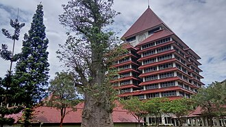
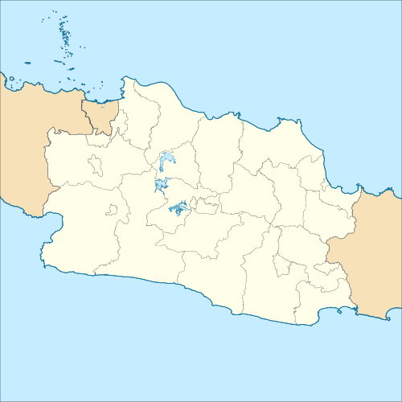
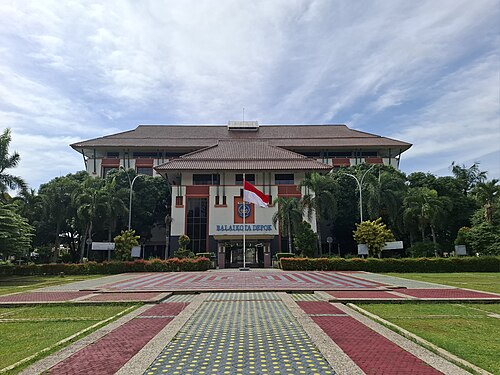

Sejarah
Ketika zaman Hindia Belanda, masa pendudukan Jepang, hingga kemerdekaan Indonesia, wilayah Depok terpisah dalam tiga kawedanan yang berbeda di Kabupaten Bogor.
Pada tahun 1898, 1909, dan 1933, Kecamatan Depok berada di bawah kawedanan Parung tersebut masuk ke dalam suatu distrik yang berpusat di Parung, Afdeling Buitenzorg. Setelah dihapusnya kawedanan berdasarkan Peraturan Presiden Nomor 22 tahun 1963, Kecamatan Depok setelah dihapusnya sistem kawedanan saat itu terdiri dari 11 desa, yaitu Depok, Depok Jaya, Pancoran Mas, Mampang, Rangkapan Jaya, Rangkapan Jaya Baru, Beji, Kemirimuka, Pondokcina, Tanahbaru, dan Kukusan.
Depok pernah menjadi pusat Residensi Ommelanden van Batavia atau Keresidenan Daerah sekitar Jakarta berdasarkan Keputusan Gubernur Batavia yaitu en Ommelanden per tanggal 11 April 1949 Nomor Pz/177/G.R. yang dimuat di dalam Javasche Courant 1949 Nomor 31. Residensi ini membubarkan Regentschap Meester Cornelis yang terbentuk sejak 1925.
Geografi
Secara geografis Kota Depok terletak pada koordinat 6° 19’ 00”–6° 28’ 00” Lintang Selatan dan 106° 43’ 00”–106° 55’ 30” Bujur Timur. Dengan luas wilayah sekitar 200,29 km², Depok merupakan daerah dataran rendah dengan ketinggian 50–140 mdpl dan kemiringan lerengnya kurang dari 15%. Depok dilalui sungai-sungai besar yaitu Sungai Ciliwung dan Sungai Pesanggrahan. Selain itu, ada juga 13 sub satuan wilayah aliran sungai dan 22 buah danau.
Wali Kota
Wali kota Depok saat ini dijabat oleh Supian Suri, didampingi wakil wali kota, Chandra Rahmansyah. Supian dan Chandra adalah pemenang pada pemilihan umum wali kota Depok 2024. Serah terima jabatan dari Wali Kota Depok terdahulu, Mohammad Idris, kepada Supian, disaksikan perwakilan Pemerintah Provinsi Jawa Barat, di Ruang Rapat Paripurna, Gedung DPRD Kota Depok, Komplek Perkantoran Kota Kembang, Grand Depok City, Cilodong, Depok, Jawa Barat.
Kemudian, pelantikan Supian dan Chandra dilakukan oleh Presiden Republik Indonesia, Prabowo Subianto pada 20 Februari 2025. Supian dan Chandra dilantik di Istana Merdeka, Jakarta.